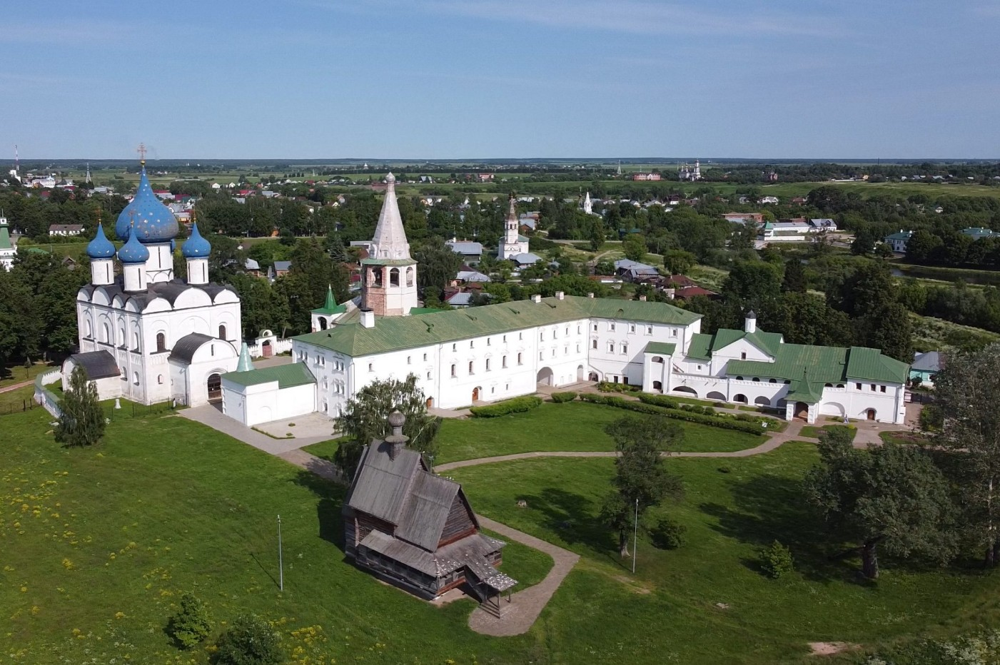

Суздаль

Суздаль — очаровательный городок во Владимирской области, напоминающий иллюстрации к русским сказкам. Он входит в самый популярный туристический маршрут России — Золотое кольцо. Суздаль является музеем под открытым небом. Старинные архитектурные памятники (белокаменные кремлевские стены, золотые купола церквей, деревянные избы) гармонично дополняют природные пейзажи: изгибы реки и цветущие луга. К тому же достопримечательности города входят в Список всемирного наследия ЮНЕСКО: исторический облик города бережно охраняется — здесь нет высотных домов и фабричных зданий.
Достопримечательности
Спасо-Евфимиев монастырь
Он был возведен на Суздальской земле еще в середине XIV века в качестве оборонительного укрепления. Сохранившиеся до настоящего времени стены монастыря окружают комплекс архитектурных построек разного времени. Наиболее примечательны из них: Спасо-Преображенский собор XVI века со старинными фресками; тюремный замок, в котором содержались неугодные правительству личности; склеп Дмитрия Пожарского; Успенская трапезная церковь; Никольский храм; Благовещенская надвратная церковь.

Посадский дом
Это небольшая каменная постройка XVI–XVII веков. Уникален дом тем, что в те века жилые строения обычно возводились из дерева и из-за этого почти не сохранились. Посадский дом представляет жилище горожанина тех времен — внутри находится музей, изображающий быт XVII века. Но дом интересен для осмотра и снаружи: аккуратное и миниатюрное белое строение с печными трубами заметно выделяется в квартале.
Александровский мужской монастырь
Согласно преданиям, монастырь был основан самим Александром Невским в далеком 1240 году. Но, в начале XVII века, все постройки были сожжены поляками. Внешний вид Александровского монастыря — это заново отстроенные в XVII веке и позднее церкви. Старейшей постройкой считается Вознесенская церковь (1695 год) с отдельно стоящей колокольней. Примечательно, что церковь строилась на средства матери Петра I, Натальи Кирилловны Нарышкиной. С 2006 года монастырь вновь является действующим.

Ризоположенский женский монастырь
Вход в монастырь очень торжественен — через арочно-башенные Святые ворота. Ризоположенский монастырь был возведен в первые годы XIII века, но постройки периода Древней Руси не сохранились. Большая часть архитектурных сооружений датируется XVI веком. Главная достопримечательность монастыря — Ризоположенский собор. Он был построен в первой половине XVI века. Также примечательна Преподобенная колокольня. Внутри находится музей колоколов и смотровая площадка с красивым панорамным видом на город.
Торговая площадь
Это атмосферное место переносит туристов в старинный русский купеческий городок. Площадь была основана в XII веке и с тех пор не изменила своего предназначения. И сейчас, как в давние времена, здесь можно приобрести валенки ручной работы или домашние соления. Архитектурный облик площади был сформирован в XIX веке. До этого ансамбль Торговой площади составляли деревянные постройки, которые были уничтожены катастрофичным городским пожаром. Архитектурной доминантой площади является сооружение Гостиного двора, построенное по подобию петербургского.
Суздальский кремль
Древнейшая постройка города впечатляет с первого взгляда. Земляной вал Суздальского кремля протянулся почти на 1,5 км. Музейный комплекс за крепостными стенами включает в себя 8 религиозных объектов — в основном, церкви разных веков постройки. Из них, наиболее выделяются: Рождественский собор (это один из самых первых храмов города — он был построен в XII веке. В оригинальном виде до наших времен собор не дошел, его неоднократно достраивали и реставрировали), Архиерейские палаты (каменные постройки XV века использовались как жилые дома для местных служителей, в том числе и для епископа), Никольская церковь (деревянная церковь середины XVIII века постройки была привезена в Суздаль из села Глотово).
Музеи
Музей деревянного зодчества
Экспозиция под открытым небом знакомит посетителей с постройками XVII–XIX веков: домами зажиточного крестьянина и купца; деревянными церквями, построенными без гвоздей; ветряной мельницей; колесным колодцем и другими шедеврами деревянного зодчества.Каждое из строений — памятник архитектуры. Они были привезены в музей из разных сел Суздальского района. Посещение не ограничивается внешним осмотром — внутри изб до мельчайших деталей воссоздан крестьянский и купеческий быт с помощью оригинальной мебели и бытовых предметов того времени.
Музей «Щурово городище»
Музей, расположенный в северной части Суздаля, на отдалении от основных туристических объектов, представляет собой интерактивную площадку. В «Щуровом городище» посетители могут погрузиться в историю и быт Древней Руси. Экспонаты — умелая имитация строений эпохи Юрия Долгорукого. Посетителям предлагается научиться сражениям на мечах, пострелять из лука или оседлать лошадь. Музей «Щурово городище» в Суздале часто становится местом для исторических реконструкций сражений.
Музей Русская старина
Музей, расположенный в торговых рядах Суздаля, знакомит посетителей с русскими традициями чаепития. Экспонаты были привезены из деревень — не только Владимирской области, но и из окрестностей Тулы и Иваново. Всего в экспозиции музея представлено более 40 различных самоваров: от старинных (самый древний был отлит на Урале в первой половине XVIII века) до более современных (например, коллекционный экземпляр, выпущенный к Олимпиаде-80).
Музей восковых фигур
Изначально, это была небольшая экспозиция на московской выставке в Сокольниках. Далее выставка восковых фигур под названием «История России в лицах» экспонировалась в столичном музее Островского и «гастролировала» по миру. Когда экспонатов стало очень много (более 150), было решено перевезти их из Москвы в Суздаль и создать отдельный музей. Сейчас экспозиция занимает 3 зала общей площадью 200 кв.м. Первый зал посвящен историческим персонажам Древней Руси, центральной фигурой в нем является князь Владимир. Во втором зале посетители увидят фигуры Ивана Грозного, Петра I, Екатерины II и именитых военачальников.Третий зал посвящен лицам XX века: советским политикам и актерам, мировым лидерам, вершившим историю.
Иконописная мастерская «София»
Необычный музей функционирует при Христорождественской церкви. Посетители не просто осматривают старинный храм, но и знакомятся с особенностями создания икон и фресок. Экскурсии проводит священник, отец Андрей. Можно увидеть процесс создания икон и самим попробовать себя в этом деле.